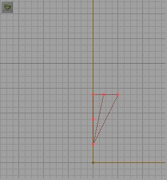
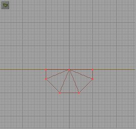

This tutorial will discuss various ways to make (and save for later use) custom shaped brushes. This is an intermediate tutorial and I assume you have used UnrealEd before, and can do basic things with it (such as make rooms, add lights, change textures, etc...). I will be using keyboard shortcuts so it is a good idea to print the Toolbar Reference in Creative Carnage's Basic Tutorial and the Keyboard Shortcut Both can be downloaded from My tutorial page. (If you are reading this tutorial offline then go download these two files before starting). Familiarize yourself with the keyboard short cuts (invaluable) and the Toolbar (so when I say things like "click the Scale Brush icon" you know where it is). I highly suggest that you read a BASIC tutorial or two if you are just starting out, and then come back to this tutorial when you have a basic idea how to make rooms and such. This tutorial will walk you thru the process, step by step. It is suggested you follow along using the examples presented. The same prinicples will apply to any shapes you want to make (look at some of my prefabs on my prefab page for examples). Once you get the hang of it then go experiment with your own shapes.
I will try to be thorough and use a lot of pictures in my tutorials. If at anytime you are not clear on something e-mail me and I will try to clarify it for you.Other Game (Quake 2) level editors read this: There are many differences between Q2 style editing and Unreal Editing. The biggest is that in Q2 you used 6 brushes to make up a cube. EVERYTHING was added to the world, and you used CSG subtracting to carve "holes" in previously added brushes. In UnrealEd it is different. There are two types of brushes you add. Think of them ass Positive (added) and Negative (subtracted) brushes. The Subtracted ones appear brown in the the 2d views, and the added ones blue. You can only add brushes inside of subtracted areas. You use subtraction to make your basic room (remember the world starts out solid and you use the red brush like a cookie-cutter to carve out rooms) then add brushes into it for details. Any Q2 converts who used QED should be familiar with negative brushes. If you are used to Worldcraft or Qoole then you are used to using a brush to "carve" or "clip" out parts of a brush, and then deleting your carving brush. With UnrealEd you don't delete the carving brush. You shape the red brush around the area you want to carve out and then SUBTRACT it from the existing brush. If you are not clear on that e-mail me and I can give you a better example. Let's move on.
You should know by now that UnrealEd has built-in "primitive" brushes. Cubes, Cylinders, cones, spheres, even stairs. This tutorial will cover how to make other shapes, like wedges, ramps, etc. All these shapes will be built using only UnrealEd. If you have a 3D modelling program like 3DStudioMax and you intend to use that for making your shapes you will have to wait for a later tutorial. This tutorial will show you how to use the above mentioned primitives to make various shapes. But before I get into shape specifics let me teach you about some tools you should know about to help you better understand what we are going to do, and familiarize you with the terms we will be using.
BrushesYou should know by now that a brush is a shape (block or whatever) in 3-d level making. In UnrealEd there are different types of brushes. The red brush is your builder brush. It is the brush you will shape to make your brushes. Remember the UnrealEd map starts out as a huge block you carve your world out of. You will also use the red brush to add things back into the areas you carve out. Wether adding or subtracting brushes, the red brush works the same way. You shape it, position it, and then click the appropriate button (wether you are adding or subtracting) to make your brush. At this point you should open UnrealEd, load a texture set (I am going to use NaliCast.utx but you can use any you like), and build a 512 X 512 X 512 room. Add a light in the middle so when we rebuild it doesn't go dark. Let's build our first custom shape.
The Wedge There are several ways to make a simple wedge. For the purpose of this tutorial I will show you two ways. The second way is much simpler, but go thru both methods so you can learn how to use Intersect and Deintersect (two things you HAVE to know to make custom brushes in UnrealEd).Great, we made a wedge! If you are using this as a torch holder you are probably going to want to use it again, so let's learn how to save it so we can reuse it later. The Red brush should still be "wrapped around" the wedge. If it's not, simply highlight the wedge, right click it and choose COPY POLYGONS and TO BRUSH. Now it should be back. Other tuorials on the web have told you to save the brush (as a .u3d file) and then load it when you want to use it again. That would be great if the tool worked! It's a bug in UnrealEd and doesn't work properly. What you really want to do is EXPORT the brush. From the file menu at the top choose Brush, and Export Brush. The default file type is .t3d and this is fine. UnrealEd likes these much better than .u3d files! Just name it (keep it simple, call it wedge1.t3d or something)and click SAVE. Now you have exported the brush to a good .t3d file. Let's test it! Click the CUBE icon to make your wedge-shaped red brush a rectangle again. Now go to Brush, IMPORT Brush, and find your Wedge (wedge1,t3d) and double click it. A pop up window will open. Make sure that SOLID MESH and KEEP ORIGINAL POLYGONS INTACT are selected and click "OK." You should have a wedge shaped red brush again. You can move this where you want it and ADD it to your world! This method works for all shapes in UnrealEd, no matter how many additive and subtraction brushes you have. Just remember to make the red brush totally surrounding the shape you want before INTERSECTING it. Always EXPORT and IMPORT brushes, rather than save/load.
So, you liked the wedge? But isn't it a little boring? Wouldn't it be cool if it were more, "jazzy?" How about a kind of conical shaped Wedge? Let's do it!
Once you have the cone positioned right click the DEINTERSECT tool. The half of your cone outside of your room should disappear. Deintersect will cut away any part of the red brush that is not visible, wether it is inside another brush, or outside of your room.
 
Now click the ADD button and you should have a wedge shaped cone against the wall. Again, you can put a torchflame on it or whatever you want.
Deintersect is a powerful tool. Along with Intersect you can use it to make some really cool, complex shapes. Remember: INTERSECT will remove any part of the brush that is not touching another brush, and DEINTERSECT will remove any non-visible part of the brush. The next tutorial will get into some more complex shapes.